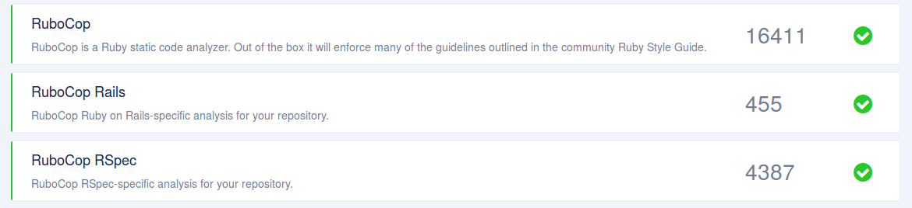

wroc_love.rb 2017 in a nutshell
A bit about me
- I <3 ruby, devops and whiskey
- all in for open-source software
- quality and automation are very important
- i don't have a blog
- i do consulting
comprehensive platform for insightful code analysis

- March 17-19th 2017, Wrocław Poland
- 10 speakers, 10 talks, 2 panels
- after parties ;)
when I was preparing this talk
I realized that I don't like doing this kind of talks
KARAFKA - PLACE WHERE RUBY, RAILS AND KAFKA MEET TOGETHER
Maciej Mensfeld
- kafka - is used for building real-time data pipelines and streaming apps
- karafka - microframework which was designed to simplify Kafka based applications development
- https://kafka.apache.org/
- https://github.com/zendesk/ruby-kafka
- https://github.com/karafka/karafka
MACHINE LEARNING FOR THE RESCUE
Mariusz Gil
Machine learning is not a single run of an algorithm. It's a process.
ML process
- define a problem
- gather your data
- understand your data
- prepare data for ml
- select & run algo(s)
- tune algo(s) parameters
- select final model
- validate final model
list of ruby gems for ML/DS http://gems.sciruby.com
3.2 was released
Fun facts
A bit of numbers
- 3 026 876 bytes of code
- 0.63% monthly growth
- 104594 lines of code
- 75.9% code in Ruby
- 4 guys handling more than 92% of code (last month)
- 1 guy with > 50% of current code base (total) ownership - Sean Schofield

Spree uses Rubocop!
But it doesn't! :(
AccessorMethodName ActionFilter Alias ArrayJoin AsciiComments AsciiIdentifiers Attr BlockNesting CaseEquality CharacterLiteral ClassAndModuleChildren ClassLength ClassVars ColonMethodCall CommentAnnotation CyclomaticComplexity Delegate DeprecatedHashMethods Documentation DoubleNegation EachWithObject EmptyLiteral Encoding EvenOdd FileName FlipFlop SpecialGlobalVars StringLiterals VariableInterpolation TrailingCommaInLiteral
But it doesn't! :(
FormatString GlobalVars GuardClause IfUnlessModifier IfWithSemicolon InlineComment Lambda LambdaCall LineEndConcatenation MethodLength ModuleFunction NegatedIf NegatedWhile Next NilComparison Not NumericLiterals OneLineConditional OpMethod ParameterLists PercentLiteralDelimiters PerlBackrefs Proc RaiseArgs RegexpLiteral SelfAssignment SingleLineBlockParams SingleLineMethods SignalException
But it doesn't! :(
TrailingCommaInArguments TrivialAccessors VariableInterpolation WhenThen WhileUntilModifier WordArray AmbiguousOperator AmbiguousRegexpLiteral AssignmentInCondition ConditionPosition DeprecatedClassMethods ElseLayout HandleExceptions InvalidCharacterLiteral LiteralInCondition LiteralInInterpolation Loop ParenthesesAsGroupedExpression RequireParentheses UnderscorePrefixedVariableName Void
So what would happen with a non-agressive Rubocop config?
(with Rubocop Rspec and Rubocop Rails)
THE OVERNIGHT FAILURE
Sebastian Sogamoso
Responsible Rails - Become the responsible Rails developer
- http://blog.arkency.com/responsible-rails/
- for free with MAKE_RUBY_GREAT_AGAIN code
- don't know if it's good, but it's for free ;)
FAULT TOLERANCE IN RUBY
Hubert Łępicki
Semian
https://github.com/Shopify/semian
- circuit breaker
- ready to use adapters (mysql, redis, net/http)
- fail fast philosophy
- works with Ruby / OS processes (but NOT threads)
- uses Unix IPC to synchronize
- modifies behaviors of third party libs
Celluloid
https://github.com/celluloid/celluloid
- turns objects into actors
- allows linking actors
- allows supervision/restarts
Ruby 3.0.0 - Guilds
http://www.atdot.net/~ko1/activities/2016_rubykaigi.pdf
http://slides.com/hubertlepicki/fault-tolerance-in-ruby
AUTOMATED TYPE CONTRACTS GENERATION FOR RUBY
Valentin Fondaratov
I'm sorry I don't remember what it was about
Fortunately there are slides
https://speakerdeck.com/valich/automated-type-contracts-generation-for-ruby
RUBY vs ELIXIR
BINDINGS IN RUBY - BEHIND THE MAGIC OF BLOCKS
Piotr Szmielew
https://speakerdeck.com/esse/bindings-in-ruby-behind-the-magic-of-blocks
- RubyVM
- TracePoint
http://charytatywni.allegro.pl/en/listing?sellerId=9300675
THE BABEL FISH IS DATA: A CASE STUDY
Norbert Wójtowicz
It was good so hopefully the video will be up shortly
Clojure and ClojureScript
You should take a look
#clojure and #clojurescript stealing best ideas from other langs
WE ALL BUILD DISTRIBUTED SYSTEMS
Maciej Rząsa
https://speakerdeck.com/mrzasa/we-all-make-distributed-systems-wroc-love-dot-rb-2017
PREDICTING PERFORMANCE CHANGES OF DISTRIBUTED APPLICATIONS
Wojciech Rząsa

https://speakerdeck.com/wrzasa/predicting-performance-changes-of-distributed-applications
PANEL - HOW TO SURVIVE IN THE JAVASCRIPT WORLD AS A RUBY PROGRAMMER AND STAY SANE

CONCURRENTRUBY V1.1.0: NEW FRAMEWORK, NEW WAY OF WRITING CONCURRENT CODE!
Petr Chalupa
http://ruby-concurrency.github.io/concurrent-ruby/Concurrent/Promises.html

Applications close April 3, 2017 at 18:00 (CEST)
THE END - Q & A
- github: @nijikon
- twitter: @tomaszpajor
- e-mail: tomek@coditsu.io
- coditsu.io